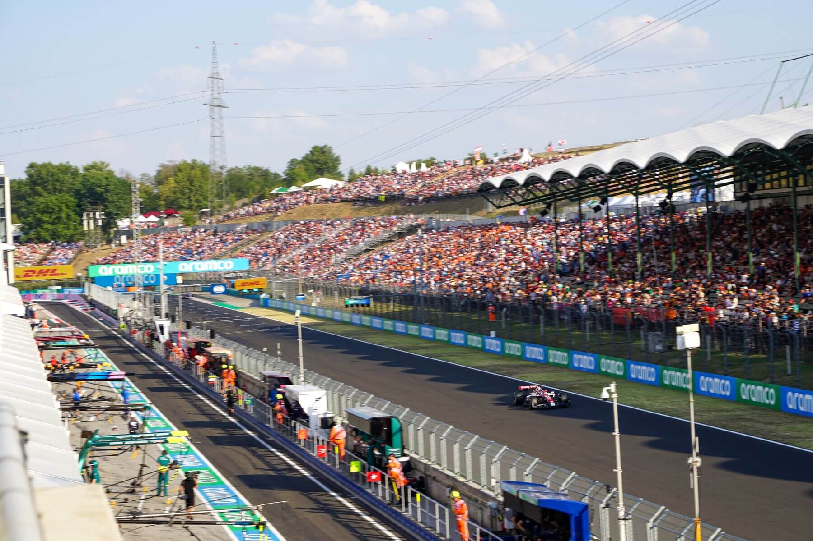

Hungaroring es un autódromo localizado en Mogyoród, Hungría, a 30 kilómetros del centro de la ciudad de Budapest. La construcción del circuito empezó el 1 de octubre de 1985 y fue terminado en ocho meses. El trazado actual tiene una longitud de 4.381 metros; las rectas más cortas que las de otros circuitos semejantes hacen que los adelantamientos en carrera no sean frecuentes.
Desde 1986, Hungaroring alberga anualmente el Gran Premio de Hungría de Fórmula 1, acompañado entre 1998 y 2004 por Fórmula 3000 Internacional y desde 2005 por GP2 Series. Hungaroring es el primer circuito tras el Telón de Acero que visitó la Fórmula 1. Desde su incorporación al calendario de Fórmula 1, ha sido uno de los autódromos más lentos junto con Buenos Aires y Jerez.
Además de estos certámenes, el circuito ha acogido al Campeonato Mundial de Superbikes desde 1988 hasta 1990; el Campeonato Mundial de Motociclismo en 1990 y 1992; el Campeonato FIA GT desde 1998 hasta 2001, en 2006 y 2009; la Fórmula 3000 Europea en 2006 y 2007; la World Series by Renault y Fórmula Renault 2.0 Europea desde 2007; y Fórmula Master Internacional en 2009. Debido al poco uso, la pista generalmente está cubierta de polvo y carece de la típica huella engomada de otros autódromos más activos.
En condiciones normales, un circuito poco transitado se caracteriza por el hecho de volverse más rápido a medida que la pista se va engomando durante el fin de semana. No obstante, este no es el caso de Hungaroring, ya que un mayor tránsito implica mayor cantidad de polvo en la pista, lo cual compensa el efecto positivo del caucho sobre el asfalto. Por esta misma razón, el circuito favorece a aquellos pilotos que salen antes que los demás en las tandas de clasificación.